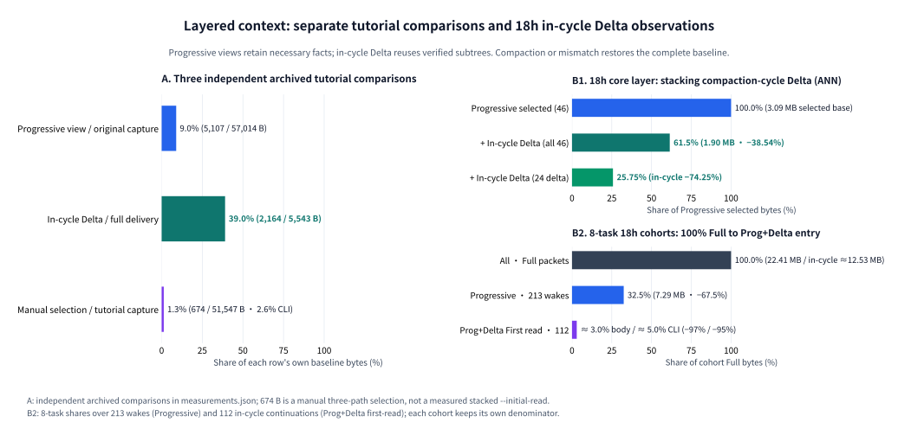
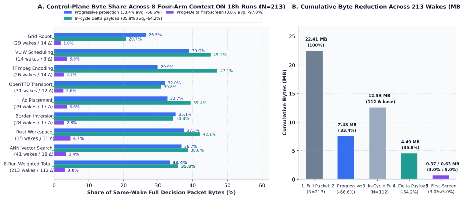
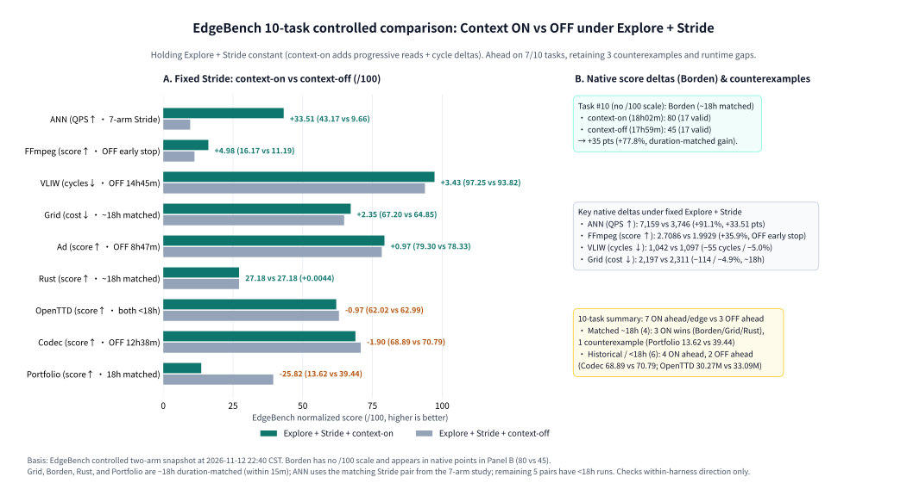
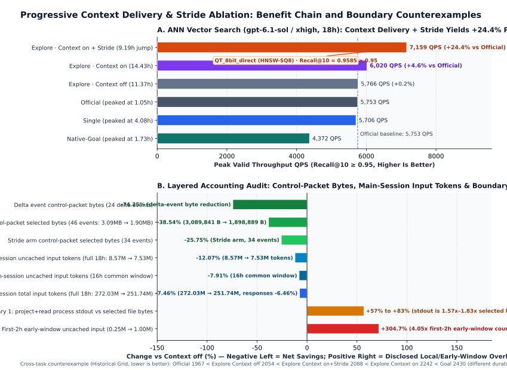
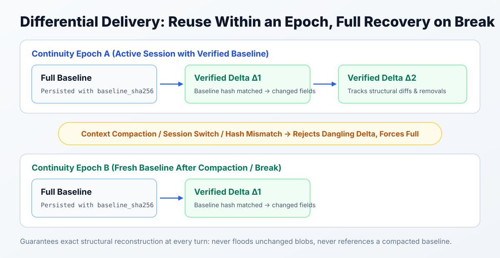

Long-running work accumulates material: the original goal, later constraints, attempted routes, failed experiments and current progress. Sending everything again on each continuation repeats more and more content; keeping only a summary can make the original basis of a decision difficult to recover.
Selective JSON Pointer lookup by itself is straightforward—it folds long-tail history not needed for the immediate decision. The core mechanism in LoopX's context delivery is compaction-cycle-bounded structured delta context: complete sources are saved first, unchanged typed subtrees are reused exactly against a verified baseline within the active context_epoch, and any host compaction or digest mismatch atomically resets to a fresh complete baseline rather than chaining dangling deltas.
Evidence: separate context comparisons, cycle deltas and task ablation
Four mechanisms, with separate measurement baselines
Complete capture, Progressive views, compaction-cycle structured Delta and a bounded --initial-read are composable mechanisms, but their bytes do not decrease monotonically for every input. Delta requires a verified same-cycle baseline; a new epoch, mismatch or smaller full representation uses complete delivery. The archived tutorial below measures three independent comparisons, not a same-source four-stage cascade.
Separate tutorial comparisons and 18h compaction-cycle Delta observations

measurements.json: the necessary view is 5,107 / 57,014 B (9.0%); the next capture's Delta file is 2,164 / 5,543 B of its full Progressive delivery file (39.0%); manually selecting three paths from the separate 51,547 B capture.json returns 674 B (1.3% body), or 1,362 B including CLI metadata (2.6%). The 674 B is not a measured --initial-read after Progressive + Delta. These saved observations belong to the revision recorded in measurements.json; output size may change with source revision and reader paths. B1: ANN's archived 18h pairs compare Delta against selected packets, with 38.54% reduction across 46 events and 74.25% across 24 in-cycle Delta events. B2: Eight-task aggregates retain the separate 213-wake and 112-continuation denominators; their percentages cannot be chained into this tutorial.Eight tasks: single-layer payloads (Progressive / lossless Delta file) vs stacked first-read
When reading the published eight-task Four-Arm Context ON 18h table below, separate single-layer file payloads from the stacked first-read entrypoint. Across 213 model-facing wakes (101 new-session or post-compaction baseline reads and 112 in-cycle continuations), the published “In-cycle Delta payload” column (4.49 MB / ≈ 12.53 MB = 35.8%) measures the unprojected lossless delivery.json file on disk (All → Delta)—a parallel single-layer cut alongside “Progressive projection” (7.29 / 22.41 MB = 32.5%, All → Progressive), not stacked Progressive + Delta. Both mechanisms stack in the final column, Prog+Delta first-screen (3.0% body / 5.0% CLI). Per-task cells retain the published values; totals are recomputed from those cells without raw per-wake logs.
- Single-layer progressive view (All → Progressive): across all 213 wakes, full packets fall from 22.41 MB to 7.29 MB (−67.5%), retaining 32.5% of original bytes (26.5%–39.0% per task) while keeping unselected candidates and historical detail expandable on demand.
- Single-layer lossless delta file (All → Delta): across 112 continuations, unprojected lossless delta files fall from approximately 12.53 MB to 4.49 MB (−64.2%), retaining 35.8% of same-wake full bytes (20.7%–47.1% per task).
- Stacked entrypoint (Progressive + Delta First Read): for those same 112 continuations, stacking progressive selection with compaction-cycle deltas brings the
--initial-readbody to 3.0% of original bytes, or 5.0% including the CLI JSON envelope (−97.0% / −95.0%). First-read size is not whole-episode model input.
8-task Four-Arm Context ON byte audit (N = 213 wakes, 112 in-cycle continuations)

Expand the eight-task data table
| Task (Four-Arm Context ON 18h) | Wakes (base / Δ) | Full packets | Progressive projection (share) | In-cycle Delta payload (vs same-wake Full) | Prog+Delta first-screen (body / CLI) |
|---|---|---|---|---|---|
Grid Robot (on_stride) |
29 (15 / 14) | 4,405,651 B | 1,166,467 B (26.5%, −73.5%) | 474,016 B (20.7%, −79.3%) | 41,878 / 76,650 B (1.8% / 3.3%) |
VLIW Scheduling (on_stride) |
14 (5 / 9) | 1,297,500 B | 505,826 B (39.0%, −61.0%) | 382,664 B (45.2%, −54.8%) | 30,860 / 50,152 B (3.6% / 5.9%) |
FFmpeg Encoding (on_stride) |
26 (12 / 14) | 2,924,522 B | 874,104 B (29.9%, −70.1%) | 759,787 B (47.1%, −52.9%) | 43,807 / 75,305 B (2.7% / 4.7%) |
OpenTTD Transport (on_stride) |
31 (19 / 12) | 3,288,042 B | 1,050,623 B (32.0%, −68.0%) | 436,053 B (30.8%, −69.2%) | 36,753 / 64,619 B (2.6% / 4.6%) |
Ad Placement (on_stride) |
29 (12 / 17) | 3,115,820 B | 1,019,704 B (32.7%, −67.3%) | 708,828 B (39.4%, −60.6%) | 64,174 / 102,437 B (3.6% / 5.7%) |
Borden Inversion (on_stride) |
28 (11 / 17) | 2,855,664 B | 1,001,254 B (35.1%, −64.9%) | 625,709 B (34.4%, −65.6%) | 50,602 / 90,024 B (2.8% / 4.9%) |
Rust Workspace (on_stride) |
15 (4 / 11) | 1,173,832 B | 439,814 B (37.5%, −62.5%) | 363,310 B (42.1%, −57.9%) | 40,956 / 64,251 B (4.7% / 7.4%) |
ANN Vector Search (on_stride) |
41 (23 / 18) | 3,347,659 B | 1,228,159 B (36.7%, −63.3%) | 737,968 B (38.6%, −61.4%) | 65,419 / 107,112 B (3.4% / 5.6%) |
| 8-Run Weighted Total | 213 (101 / 112) | 22,408,690 B (100%) | 7,285,951 B (32.5%, −67.5%) | 4,488,335 B (35.8%, −64.2%) | 374,449 / 630,550 B (3.0% / 5.0%) |
Basis and source: the published eight task rows sum to 7,285,951 B / 22,408,690 B = 32.5% for Progressive across all 213 wakes. Delta and first-screen shares of approximately 35.8% and 3.0% / 5.0% cover only the 112 in-cycle wakes. Their Full denominator was published rounded as 12.53 MB; it is not the 213-wake total. This is an aggregate recalculation, not a new experiment or an independent audit of per-wake logs. Public aggregate data and provenance.
Implementation status: #8266 remains an open C1 proposal. The final merged scope of #8304 preserves precision while reusing ordering and a verified digest. These cohort bytes do not establish a shipped unified Controller/Worker gain.
Ten-task controlled comparison: Context ON vs Context OFF under fixed Explore + Stride
Cutting packet bytes only matters if long-horizon task performance holds up or improves. From the EdgeBench 10-task evaluation (2026-11-12 22:40 CST snapshot), we isolate the controlled two-arm contrast holding the same Explore + Stride harness fixed: Explore + context-on (progressive reading + compaction-cycle structured delta enabled) vs Explore + context-off (both disabled), testing only what switching Context Delivery on vs off changes within that chassis.
- Ten-task tally (7 ahead or slight edge vs 3 OFF ahead): under fixed
Explore + Stride, enabling Context Delivery putsExplore + context-onahead of or slightly ahead ofcontext-offon 7 of 10 tasks—including Borden (80 vs 45, +77.8%), ANN (7,159 vs 3,746 QPS, +91.1%), and Grid (2,197 vs 2,311cost, −114)—while explicitly preserving all 3 counterexamples wherecontext-offscores higher. - Strictly duration-matched ~18h pairs (4 tasks within the 15-minute tolerance): 3 wins to 1—Borden rises from
45to80(+35 pts / +77.8%); Grid total cost (lower is better) improves from2,311to2,197(−114 / −4.9%, +2.35 normalized pts); Rust (both17h57m) shows a slight native edge forcontext-on(27.1801 vs 27.1757); the matched 18h counterexample is Portfolio (both18h00m,13.62 vs 39.44, OFF wins). - Historical Stride slice & incomplete-duration pairs (6 tasks, runtimes stated explicitly): using the matching Stride pair from the historical seven-arm ANN cohort,
context-onreaches7,159 QPSvscontext-off3,746 QPS(+91.1%, +33.51 normalized pts); FFmpeg reaches2.7086 vs 1.9929(+35.9%, OFF stopped early pending rerun); VLIW cycles (lower is better) improve to1,042 vs 1,097(−55 cycles / −5.0%, OFF historical 14h45m); Ad reaches49.67B vs 49.63B(ON 18h00m vs OFF 8h47m host-startup hang). The two remaining counterexamples are Codec (ON full 18h00m68.89vs OFF70.79in 12h38m despite a model-service block) and OpenTTD (both Explore arms <18h, ON30,266,729vs OFF33,090,430).
Reconciling two figures with the ablation section below: (1) this section's ANN pair (3,746 vs 7,159 QPS) comes from the two Stride-enabled Explore arms in the seven-arm cohort (Explore + Stride + context-off / on); #ablation-evidence separately lists the without-Stride Explore baseline (Explore · Context off 5,766 and Explore · Context on 6,020) from that study, so the two tables describe distinct arm pairs. (2) Grid here (2,197 vs 2,311) reports the completed ~18h pair within 15-minute tolerance (with context-on via same-session continuation), whereas #ablation-evidence retains the earlier unmatched-duration “Historical Grid” counterexample (Off 2054 < On+Stride 2088) for historical continuity.
EdgeBench 10-task controlled score comparison (fixed Explore + Stride: Context ON vs OFF)

ON − OFF delta, showing arm runtime status. B: Native-point summary including task #10 Borden (no /100 scale, matched ~18h: 80 vs 45), key native deltas, and counterexample disclosures.Expand the 10-task controlled score and runtime table
| Task (metric & direction) | Duration parity | Explore + context-on Native (/100 · duration · valid) |
Explore + context-off Native (/100 · duration · valid) |
ON vs OFF delta |
|---|---|---|---|---|
| Borden (score ↑) | Matched ~18h | 80 (— · 18h02m · 17 valid) | 45 (— · 17h59m · 17 valid) | +35 (+77.8%) |
| Grid (total cost ↓) | Matched ~18h | 2,197 (67.20 · 17h57m · 17 valid) | 2,311 (64.85 · 17h59m · 13 valid) | −114 (−4.9%, +2.35 pts) |
| Rust (score ↑) | Matched ~18h | 27.1801 (27.18 · 17h57m · 10 valid) | 27.1757 (27.18 · 17h57m · 10 valid) | +0.0044 (tied / slight edge) |
| Portfolio (score / 100 ↑) | Matched 18h counterex. | 13.62 (13.62 · 18h00m · 17 valid) | 39.44 (39.44 · 18h00m · 17 valid) | −25.82 pts (OFF wins) |
| ANN (QPS ↑) | 7-arm Stride cohort | 7,159 (43.17 · 6 valid) | 3,746 (9.66 · 4 valid) | +3,413 (+91.1%, +33.51 pts) |
| FFmpeg (score ↑) | OFF early stop | 2.7086 (16.17 · 18h01m · 16 valid) | 1.9929 (11.19 · early stop · 6 valid) | +0.7157 (+35.9%, +4.98 pts) |
| VLIW (cycles ↓) | OFF 14h45m hist. | 1,042 (97.25 · 17h57m · 14 valid) | 1,097 (93.82 · 14h45m · 12 valid) | −55 cycles (−5.0%, +3.43 pts) |
| Ad (total score ↑) | OFF 8h47m hang | 49,673,040,827 (79.30 · 18h00m · 16 valid) | 49,631,904,944 (78.33 · 8h47m · 7 valid) | +41.14M (+0.97 pts) |
| Codec (score ↑) | OFF 12h38m counterex. | 68.89 (68.89 · 18h00m · 13 valid) | 70.79 (70.79 · 12h38m · 11 valid) | −1.90 pts (OFF wins) |
| OpenTTD (score ↑) | Both <18h counterex. | 30,266,729 (62.02 · 10h47m · 10 valid) | 33,090,430 (62.99 · early stop · 7 valid) | −2.82M (−0.97 pts, OFF wins) |
Measurement and scope boundary: these are C1 mixed-cohort exploratory observations (active solver duration accumulated after excluding downtime). This section holds Explore + Stride constant solely to examine the directional effect of toggling context delivery (Context ON vs Context OFF) within the harness; because resumed sessions and incomplete durations remain, it does not establish an isolated C2 causal proof. Whole-system iso-budget Pareto comparisons against zero-overhead external baselines belong to a separate question addressed in Layer 2 of EdgeBench feedback and memory. Structured records live in public aggregate data.
Multi-task and layered ablation: benefit chain and boundary counterexamples
In EdgeBench ANN vector search optimization (gpt-6.1-sol / xhigh, 18h, subject to Recall@10 ≥ 0.95) and cross-task ablations, we separate Context Delivery (progressive selection and cycle deltas) from Stride (evidence-conditioned experiment sizing), auditing selected control-packet bytes, main-session model input tokens, and local/early-window counterexamples side by side (reconciled from archived trajectories and receipts by @shangzh0):
Multi-task ablation and layered accounting

Recall@10 ≥ 0.95). Bottom (B): Layered control-packet byte and main-session input token savings vs Context off (left, negative) alongside disclosed local/early-window overhead and cross-task counterexamples (right, positive). Open image for full size.This dual-track audit shows why control-packet byte reduction (−74.25% / −38.54%) must not be equated with whole-episode model token savings (−12.07% uncached, −7.46% total), nor used to hide early-window indexing overhead (4.05× in the first 2 hours) or cross-task counterexamples. The reported ANN runs contain both lower input totals and later useful experiments. That observation motivates testing whether context delivery helps sustain long research, but does not by itself attribute the outcome to saved attention, separate every interaction with Stride, or establish a gain on another task. The November source changes described later were not treatments in these archived runs. See EdgeBench late-stage breakthroughs and five-arm attribution for the original research context.
Expand the ablation results and counterexamples
| Dimension or experimental arm | Observed figure | Scope and interpretation |
|---|---|---|
| ANN 18h: Official / Single / Native-Goal | 5,753 / 5,706 / 4,372 QPS | Official peaked at 1.05h and remained on a plateau afterward |
| ANN 18h: Explore · Context off | 5,766 QPS (+0.2%) | Peaked at 11.37h; input accounting is reported separately below |
| ANN 18h: Explore · Context on | 6,020 QPS (+4.6%) | Peaked at 14.43h; this run's later peak does not isolate the cause |
| ANN 18h: Explore · Context on + Stride | 7,159 QPS (+24.4%) | Breakthrough at 9.19h (QT_8bit_direct HNSW-SQ8, Recall@10 = 0.9585) |
| Control-packet bytes: 24 delta events / 46 paired events | −74.25% / −38.54% | Paired selected bytes dropped from 3,089,841 B to 1,898,889 B (−25.75% across 34 Stride-arm events) |
| Main-session input tokens: full-18h uncached / total | −12.07% / −7.46% | Uncached input 8.57M → 7.53M (−7.91% on the 16h common window); total input 272.03M → 251.74M |
Counterexample 1: project+read process stdout |
+57% to +83% (1.57×–1.83×) | CLI JSON framing and pagination metadata make process stdout larger than raw selected file bytes |
| Counterexample 2: First-2h early-window uncached input | +304.7% (0.25M → 1.00M) | Baseline establishment and staged discovery add upfront work; later amortization is not guaranteed by this early window |
| Counterexample 3: Historical Grid (lower is better) | Official 1967 < Off 2054 < On+Stride 2088 < On 2242 | Cross-task counterexample under differing durations and resources; retained without causal overclaim |
The core native Codex path ships in LoopX 2.2.0. Supported POSIX Codex App/SSH sessions and new benchmark heartbeat trials default to context delivery; saved off remains effective and explicit off is available. When enabled, complete content is saved first and the Agent receives a reading entrypoint for current facts. See the 2.2.0 release notes for publication and validation scope.
Think of a capture as a complete saved snapshot, like a book whose edition is fixed. An index locates its chapters; a JSON Pointer addresses a place inside it. Progressive reading determines how deeply to open the material now. Differential delivery determines what can be reused on the next continuation.
This November 8 revision also follows the first-read, staged-scope, transport and numeric-fidelity changes merged after 2.2.0, checked at source 611019243e. Those sections describe that source snapshot, not an upgrade already installed everywhere. The teaching measurements and opening archived research results retain their earlier versions and conditions.
Follow one task: give an assistant voice input
Suppose an assistant needs to understand a voice note and reply in its original chat. Its complete material contains the goal, provider constraints, privacy requirements, acceptance and a long discussion of alternatives. This is a teaching example; the example program below generates the complete data in an isolated directory.
capture.json
├── goal
│ ├── objective: understand a voice note and reply in its original chat
│ ├── constraints
│ │ ├── provider: prefer the already configured speech service
│ │ └── privacy: no public audio; external processing needs authorization
│ └── acceptance: correct transcript, same-chat reply, explicit unavailability
├── providers
│ ├── configured
│ │ ├── formats
│ │ └── authorization
│ └── alternative
│ ├── formats
│ └── authorization
├── evidence: trial results, input formats and reply destinations
└── history: 80 complete discussion entries
First, the Agent needs to understand the integration boundary. It must see both the preference for an existing service and the authorization requirement. A provider preference does not authorize sending audio. The historical discussions remain available when comparing alternatives or checking their basis.
Complete sources are assembled from existing typed owners, with Goal material, full tasks, cumulative acceptance and revisions. Marked generated regions are supplied by canonical tasks; other original narrative, comments and stops remain complete. Headings do not determine which prose may be deleted. This example places its current integration requirements in goal; any additional source-owned mandatory reads still apply.
The figures below are actual reader and codec measurements on this synthetic material. They make no model or speech-service calls. The example program generates the complete sources; the original measurement record preserves the reported figures.
When you know the locations, read them together
/goal/constraints is a JSON Pointer: enter goal from the JSON root, then constraints. It resembles a file path but addresses a value inside JSON.
The file, Pointer and digest answer different questions. capture.json identifies the complete file; the Pointer identifies a location; SHA-256 pins its version. /requirements/0 addresses the first array item. Reordering can change what that index addresses, so use a Pointer with its capture version.
After running the example, $CAPTURE denotes the output directory’s capture.json; $SHA comes from its manifest.json. Select the three known locations in one request:
loopx --format json quota context-read \
--capture-file "$CAPTURE" --capture-sha256 "$SHA" \
--select /goal/objective \
--select /goal/constraints \
--select /goal/acceptance
This retrieves the objective, complete constraints and acceptance together, including both provider preference and privacy. Repeated --select arguments combine the read request; each value retains its own Pointer.
The complete capture is 51,547 bytes. Using the same file, 16,000-byte pages and a 20,000-byte CLI output limit:
| Read | CLI calls | Returned body | Complete CLI responses |
|---|---|---|---|
| Page through the complete capture | 4 | 51,547 B | 55,607 B |
| Select the three locations separately | 3 | 804 B | 2,694 B |
| Select all three in one batch | 1 | 674 B | 1,362 B |
The last two rows retrieve identical Pointer/value pairs; repeated requests and framing account for the difference. The first also retrieves the complete history, so its information scope is larger. This table compares the step of reading those three facts now. Capture generation, storage and the initial reference are shared prerequisites.
When the structure is unfamiliar, index the relevant subtree
If the Agent does not know the provider record's fields, it can expand /providers locally. --list returns metadata: Pointers, types, sizes, and member counts for objects and arrays.
loopx --format json quota context-read \
--capture-file "$CAPTURE" --capture-sha256 "$SHA" \
--select /providers --list --list-depth 2
Depth two exposes the provider entries and their fields together:
/providers/configured object
/providers/configured/formats array
/providers/configured/authorization string
/providers/alternative object
/providers/alternative/formats array
/providers/alternative/authorization string
Next, batch the format and authorization fields. The index locates them; their values must actually be read before dependent decisions.
Listing /providers and each of its two children separately takes 3 calls and 2,784 bytes of CLI responses here. Depth two returns the same set of field addresses in 1 call and 1,283 bytes.
Read known addresses directly; index relevant structure when you need discovery. A small reference may already include the top-level index when it fits. Progressive reading follows the question rather than prescribing a fixed index–single-field–next-level sequence.
See requirements first, then open their evidence
A correct transcript alone does not establish successful integration. The result must return to the original chat.
The two example records say:
sample-1: correct transcript, returned to the original chat
sample-2: correct transcript, replied in another chat
A summary saying “transcription succeeded” can hide the second failure. The implemented native acceptance projection preserves complete requirements and current review state so the Agent first sees the relevant fields:
{
"description": "Return the transcript to its original chat, preserving source, order and audio reference.",
"status": "unverified",
"agent_review": {
"conclusion": "unmet",
"basis_current": false,
"independently_verified": false
}
}
Unmet acceptance and a stale basis stay in the decision layer. Follow the original-material entrypoint to inspect why it failed and which evidence supports the judgment. Agent review and independent verification remain separate facts.
The implementation returns supporting_material_pointer, locating the outcome in the original capture. Call that returned prefix $P: append /requirements/2/agent_review/note for the explanation, or /requirements/2/agent_review/evidence_refs for evidence references. Use this capture's prefix rather than copying an array position from another file.
After assembling the voice task into the existing typed acceptance structure, its complete original capture is 57,014 bytes and necessary view 5,107 bytes. All 10 requirement descriptions remain complete, together with unmet/stale/independent-verification facts. The original 57,014 bytes also remain intact. Supporting history and long explanations have exact expansion addresses.
Relationship navigation can suggest which outcomes to inspect first using task dependencies, shared acceptance, sources and evidence. Incomplete relationships widen scope, and contrary evidence from other routes stays accessible. Navigation helps order reading; the Agent still determines what affects this decision.
Read scope before the decision that depends on it
The voice integration also has a timing question: when must the Agent inspect every allowed write path? In the November source, selection and ordinary claim preparation can replace a long write_scope list with an exact expansion address in the original capture. Stops and approval requirements remain directly visible. If choosing the speech adapter depends on whether its files may be edited, the Agent must open that scope before choosing. The ready decision supplies the complete current scope; claiming the task still checks ownership and scope atomically.
This changes when detail is read. It neither grants permission nor removes a required check. The regression uses 220 synthetic paths to exercise a long scope list; that is a stress fixture, not 220 product rules. Reading the list adds a call when it is needed, and the ready-stage list remains complete. Scope change and validation · checked implementation.
Share exact records within one delivery
A task can appear in both current work and a queue summary. Repeating an identical complete record adds no fact.
The native necessary view can retain one complete task and reference it elsewhere:
{
"todo_id": "todo_voice",
"context_ref": "/agent_todo_summary/first_open_items/0"
}
The Pointer addresses the complete record in this same current view. Serialized separately with a trailing newline, the task record is 1,052 bytes, versus 80 bytes for its reference. Complete constraints remain at the original location, and every queue retains its membership and order.
This is exact sharing. Different revisions, owners, evidence or constraints remain separate even when titles match. Unknown fields and unsupported structures retain their original content. Response-local sharing needs no old session baseline; cross-Turn deltas are a separate mechanism.
On the next continuation, deliver what changed
The voice task progresses: a third sample is added, work moves from checking the original-chat return to checking a repaired return, and the review basis changes. The objective and most requirements remain unchanged.
This is where structured context deltas within a compaction cycle apply.
Within a valid cycle, a verified saved baseline supports exact reuse of unchanged text, arrays and objects. Additions, edits, removals and array reordering are explicit. A relocated subtree can reference its original position with current edits overlaid. Reconstruction must match the complete current source.
One valid cycle
Previous: complete objective + all requirements + samples 1, 2 + old work state
Current: add sample 3; update work state and review basis
Restore: the complete current context
For the same synthetic task and scope, the codec produces:
| Condition | Result | Size or readback |
|---|---|---|
| Encode the complete current view | full | 5,543 B |
| Reuse a verified baseline within the cycle | delta | 2,164 B; exact value-by-value reconstruction |
| Change context epoch | full | No reuse of the old cycle's baseline |
| Damage the delta | Recover current full | Exact match with the complete current view |
| Change a tiny two-field input | full | Keep complete delivery when delta overhead is unsuitable |
This table measures codec output. The native adapter also compares actual delivery bytes including references, page framing and reading instructions, selecting full when preferable. Size comparisons serve efficient delivery without replacing completeness.
When enabled, the default output is a reading entrypoint
Connect these operations back to the currently supported native Codex quota path:
One capture, from saved source to reading
decision-<id>/
├─ projection.json source
├─ required-context.json facts
├─ delivery.json full/delta
└─ *.reader.json reader
One useful property is that even with mode: "delta", the Agent can select facts directly through current recovery. It does not first need to read an old baseline or replay every delta. Delta's path may address delivery.json; recovery and select_command address the complete current view. context_details then connects supporting material to the original capture.
Native navigation also stores complete capture/selection digests in immutable private reader references. The Agent copies the returned reference; the CLI still verifies the complete digests, selection and cursor on every page. SHA256 itself is not shortened. A first_read_command starts a selection; it does not establish that all required sources were read.
# Copy the original recovery.reference_file from current returned navigation.
loopx --format json quota context-read \
--reference-file "$RECOVERY_READER_REFERENCE" \
--select "$POINTER_A" --select "$POINTER_B"
A continuation reference pins its selection: follow its next_command to EOF and return to the original recovery reference to change Pointers. Very small budgets may retain the explicit file/digest interface. The teaching measurements above use that compatible interface and retain their original conditions.
The first response has to arrive complete
A short command can return a large response. For the voice task, the first read must deliver the current decision, required reads and a way to continue. If the tool truncates the response, the Agent can lose the instruction for recovering the missing material as well.
The November source therefore budgets the complete serialized JSON response in UTF-8 bytes, including quoting, page metadata and navigation. --page-bytes limits content bytes; --max-page-output-bytes limits the whole response. With no explicit output budget, generated linked first reads and attached native context-project --initial-read pages use a 12,000-byte fallback. Ordinary bulk/recovery readers and the saved task-selection recipe retain their existing budgets.
When the complete starting selection needs multiple pages, the attached reader tries an independently complete opening containing the decision and read obligations. It uses that opening only if the entire response fits; the rest stays required through remaining_read_command and its page cursors. A cursor is the returned byte offset for continuing the same selection. If the opening cannot fit, ordinary same-capture pagination remains available. For a missing or unwritable context store, recovery likewise retains the original capture.
# Explicit budgets on a current returned reader reference:
loopx --format json quota context-read \
--reference-file "$RECOVERY_READER_REFERENCE" \
--select "$POINTER_A" --select "$POINTER_B" \
--page-bytes 12000 --max-page-output-bytes 12000
These two limits can have the same value while the returned content is smaller: framing takes space too. Twelve thousand bytes is a fallback for an unknown tool boundary, not a universal optimum or a guarantee that the host retains those bytes in later model input. Smaller pages may require more calls and repeated framing. After truncation, recover the affected range from the same capture with a suitable explicit budget; do not repeat task admission or external work. First-read change and validation · checked reader.
What was saved, and what the model has read
The delta codec answers: can the verified old file reconstruct the exact current file? The native captured_file path verifies the complete saved baseline, version and scope. It does not require the model to have read the old file, reached a selected page’s EOF or sent an ACK. Each baseline is itself a complete version, so the model need not replay a chain of deltas first.
Progressive reading answers a different question: which facts does this decision need? In the voice illustration, suppose the next continuation adds sample 3 while the privacy constraint remains unchanged. Consider a missed-read counterexample: the Agent skipped the required privacy constraint, or can no longer establish it after compaction. Before sending audio externally, it must recover /goal/constraints through the current entrypoint and honor the existing authorization boundary. It can read that fact directly, without first draining the old baseline. A saved file or an unchanged field does not replace the necessary read.
Count the trips and the copies, too
Some delivery cost occurs before the model sees anything. The Python CLI asks the TypeScript owner to prepare a view and receives its response. Each such request and reply is a local process round trip, also called an internal RPC. A CLI command can make several of these trips.
For an already verified saved capture, the November source can return the first selection directly with progressive delivery on and cycle deltas off. The selection already names the needed facts; precomputing a root index first adds an unnecessary trip. Review, writeback instructions and recovery still point to the same original decision.
The author’s fixed synthetic SQLite sequence in #8298 covers the first selection, review and writeback-contract reads. Its report at 775394bd8d, integrated with 94b91e48aa, records:
| Measure | Before | After |
|---|---|---|
| CLI calls | 4 | 3 |
| Internal RPCs | 5 | 4 |
| RPC transport | 326,204 B | 271,741 B |
| Selected first-read content | 8,046 B | 8,046 B |
| Complete CLI stdout | 32,846 B | 33,060 B |
One fewer command did not make every layer smaller. The selected content was unchanged, and navigation made stdout slightly larger. These are the author’s process measurements, not a new performance run on this article’s source snapshot or a model-token result.
A second duplication occurred inside a response: full native delivery sent the same projected body as both typed edits and delivery.context. The producer now sends it once across the Effect bridge, and the Python adapter reconstructs the ordinary full shape. Delta still carries its own edits. In #8285’s author record, the affected SQLite response fell from 53,999 to 38,225 B; the sequence including the guard, native hook, a rejected hash and same-capture retry fell from 1,021,975 to 1,006,203 B. Stage outputs and call counts matched. Producer · adapter.
Both changes remove repeated transport while retaining the task’s requirements. Their end-to-end value still depends on later reads, recovery, actual model input and cache use, output, elapsed time and accepted work. Local wire bytes cannot stand in for those costs.
Recover missing context while preserving the original work
After host compaction, a subsequent work Turn builds a new complete baseline. Original goals, requirements and sources remain available for necessary reads.
If compaction, missing pages or truncated output interrupt an unfinished Turn, recover missing facts from its original capture while retaining task, effect and settlement identity. If a voice result was already sent but its receipt was lost, recovering context must not become sending the result again.
Reading has explicit failure boundaries:
- Changed bytes with an unchanged digest: reject the read and verify the version.
- A missing Pointer: reject the whole batch; index a known parent to recover. A present JSON
nullreturns normally. - Paged content: follow
next_commandwith capture digest, selection digest and byte cursor; combine contiguous content in order. Selection EOF covers only that selection. - Unknown or inapplicable structures: retain complete content and original read obligations rather than guessing which prose can be hidden.
A shorter view must preserve the original values
File integrity alone does not guarantee that every projected value survived a language boundary. A staged read reproduced in November turned the integer 9007199254740993 into 9007199254740992. Two distinct acceptance records could then appear identical and share one reference. The raw capture could remain unchanged while the returned facts were wrong.
The saved native path now avoids an unnecessary replan projection for ordinary decisions and applies presentation edits to original source values when replanning is needed. The staged replan reader likewise restores original numbers, preserving integers, integral floats and negative zero. Distinct records get distinct references; an ambiguous historical reference is rejected with a route back to review, while an unambiguous one still resolves. Explicit page windows also reach the saved reader through its existing validation. These are correctness and recovery changes merged in #8319 and #8324, with synthetic public-CLI regressions; they do not establish model comprehension or task-level savings.
Continuity and recovery

One valid cycle: complete baseline → changed facts and delta → exact reconstruction.
New cycle or known continuity loss: complete current source → read necessary facts again.
What the measurements establish
The example separates three mechanisms: avoid repeatedly moving history not currently needed, combine reads that belong together, and avoid retransmitting unchanged verified structures. Complete sources, requirements and recovery connect them.
Reader figures include actual CLI page metadata; local path length affects a small amount of framing. Projection figures compare capture bodies; the cycle table compares codec output. The reproduction script checks these distinct measurements and exact reconstruction.
Real long-running tasks must also count necessary later reads, recovery, cache hits, model input/output, tool calls, waiting and human attention. Effectiveness depends on constraints understood, decisions made and accepted outcomes. The synthetic voice example above measures the mechanical path; the opening eight-task comparison and 18-hour ablations separately examine transport cost, model input and task outcomes in long-running research.
2.2.0 ships complete sources, file entrypoints, batch selection, index depth, applicable acceptance layering, exact sharing, cycle deltas and recovery. Broader decision-stage candidate, preference and Explore delivery and consistency across all entrypoints remain unfinished. Disable in Settings → This machine → Capabilities → Differential context → Codex; saved off survives upgrade. A command or new benchmark trial can use --context-delivery off. Trials do not inherit the machine switch, and existing frozen trials are not rewritten. Under the default policy, ordinary CLI, unsupported hosts and non-heartbeat benchmarks retain their full paths; an explicit unsupported on request is rejected. Unavailable hooks use full delivery. Saving configuration, actual installation and model adoption remain separate checks.
Read the same material yourself
example.py generates this complete synthetic voice task and invokes the existing reader, progressive projection and delta owners. It checks selected values, directory addresses, all ten requirements, shared references and complete recovery. It registers no Goal, admits or settles no Turn, and calls no model or speech service.
Prepare the original measurement checkout, a4a0fad889d91cba0d945ce658788bdb76ba351e, and its compatible dependencies. Run from that checkout’s root, substituting the downloaded program path. The output directory must be empty.
uv run --extra test python /path/to/example.py \
--loopx-root "$PWD" --output .local/context-delivery-example
Generated capture.json retains all 80 history entries. projection.json and required-context.json hold the complete/necessary views; cycle-base.json and cycle-delta.json hold cycle encodings; manifest.json pins files and digests. Production reads use currently returned paths, never copied teaching fields or another capture’s array indexes.
The original measurement record pins this article’s figures. Running on other source can check its mechanisms but cannot rewrite the original observation. Local path length also affects page framing bytes. Understanding this example requires no new research run.
Sources: complete-delivery contract, progressive projection, selection/index, delta/recovery. The example ran on a4a0fad; its three measured core owners are byte-identical in 0e78a19. The implementation links above are pinned to released v2.2.0; the old numbers are not a post-release rerun. Native final delivery also accounts for references and later reads, beyond codec output.